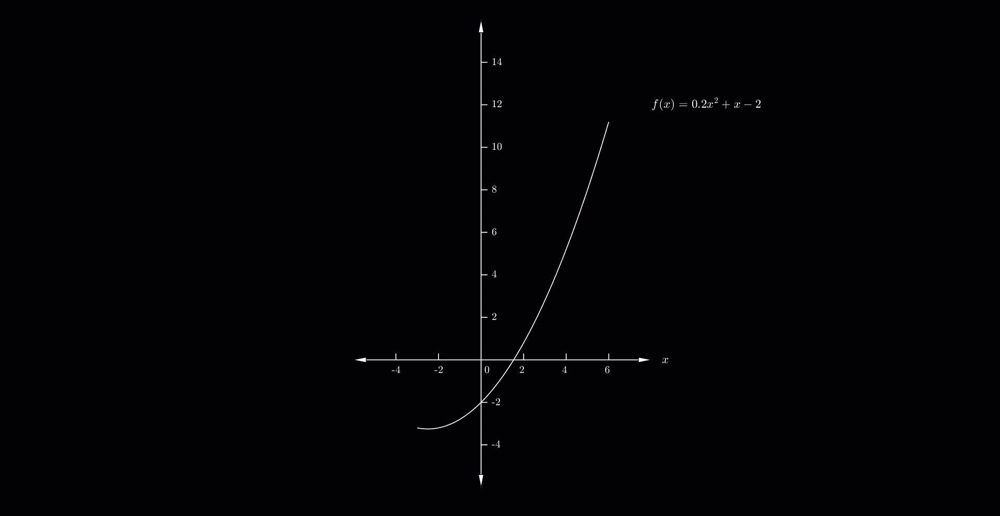

The Newton-Raphson Method stands out as a widely adopted approach for determining the roots of equations. It can be adeptly extended to ascertain solutions for a system of equations. Furthermore, its convergence towards the root showcases a quadratic progression as the solution is approached.
Let's consider the continous function \(f\) and its derivative \(f'\) and initial guess \(x_0\)
\[ x_1 = x_0-\frac{f(x_0)}{f'(x_0)} \]
\[ x_1 = x_0-\frac{f(x_0)}{f'(x_0)} \]
Steps to find the root:
Example: Consider a function \(f(x)=0.2x^2+x-2\)- Assume \(x_0\) be the approximate root of \(f(x)=0\)
- Find next value \(x_1\)
- Repeat above two steps until \(f(x)=0\)

\(f'(x)=0.4x+x\)
We have \(x_0=5\)
\(1^{st}\) Iteration:
\(x_1 = x_0-\frac{f(x_0)}{f'(x_0)}\)
\(x_1 = 5-\frac{f(5)}{f'(5)}\)
\(x_1 = 5-\frac{8}{3}\)
\(x_1 = 2.3333\)
Now, for next iterations.
We have \(x_0=5\)
\(1^{st}\) Iteration:
\(x_1 = x_0-\frac{f(x_0)}{f'(x_0)}\)
\(x_1 = 5-\frac{f(5)}{f'(5)}\)
\(x_1 = 5-\frac{8}{3}\)
\(x_1 = 2.3333\)
Now, for next iterations.
| \(Iteration\) | \(~~~~~~~~~x~~~~~~~\) |
|---|---|
| \(~~~~~1^{st}\) | \(~~~~~2.3333\) |
| \(~~~~~2^{nd}\) | \(~~~~~1.5977\) |
| \(~~~~~3^{rd}\) | \(~~~~~1.5317\) |
| \(~~~~~4^{th}\) | \(~~~~~1.5311\) |
Example: Consider a function \(f(x)=0.2x^2+x-2\) with initial value \(x_0=-1\)
\(f'(x)=0.4x+x\)
We have \(x_0=-1\)
\(1^{st}\) Iteration:
\(x_1 = x_0-\frac{f(x_0)}{f'(x_0)}\)
\(x_1 = -1-\frac{f(-1)}{f'(-1)}\)
\(x_1 = -1-\frac{-2.8}{0.6}\)
\(x_1 = 3.6667\)
Now, for next iterations.
We have \(x_0=-1\)
\(1^{st}\) Iteration:
\(x_1 = x_0-\frac{f(x_0)}{f'(x_0)}\)
\(x_1 = -1-\frac{f(-1)}{f'(-1)}\)
\(x_1 = -1-\frac{-2.8}{0.6}\)
\(x_1 = 3.6667\)
Now, for next iterations.
| \(Iteration\) | \(~~~~~~~~~x~~~~~~~\) |
|---|---|
| \(~~~~~1^{st}\) | \(~~~~~3.6667\) |
| \(~~~~~2^{nd}\) | \(~~~~~1.9009\) |
| \(~~~~~3^{rd}\) | \(~~~~~1.5467\) |
| \(~~~~~4^{th}\) | \(~~~~~1.5312\) |
| \(~~~~~5^{th}\) | \(~~~~~1.5311\) |